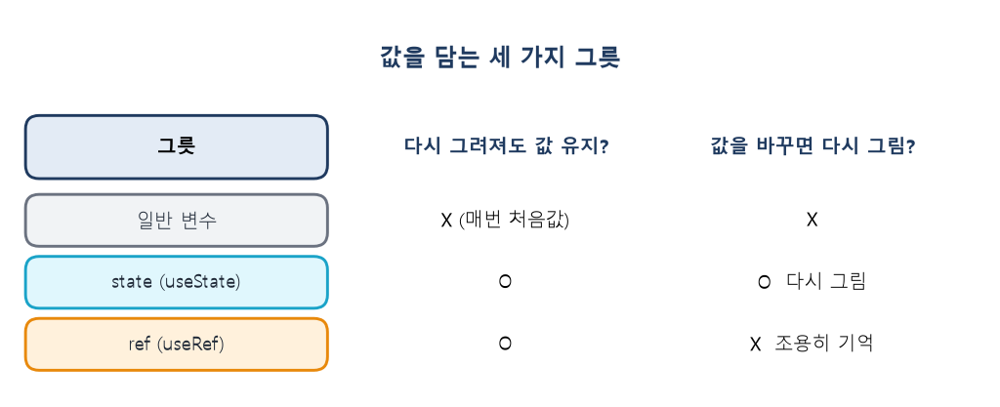
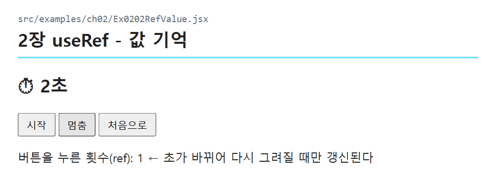
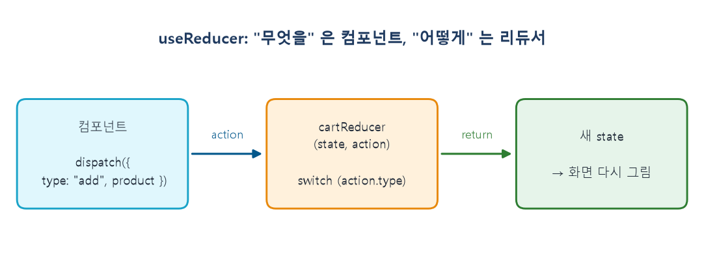
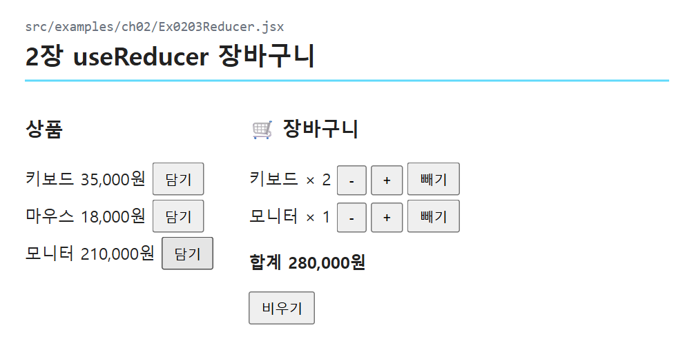

2장. useRef 와 useReducer
학습 목표
useRef로 화면의 태그(DOM)를 직접 잡아 포커스·스크롤을 다룬다.useRef로 "다시 그리지 않고 기억만 하는 값" 을 보관한다.- state·ref·일반 변수의 차이를 표로 설명할 수 있다.
useReducer로 state 를 바꾸는 규칙을 리듀서 함수 한 곳에 모은다.
2-1. useRef ① 태그를 직접 잡기
React 는 "데이터를 바꾸면 화면은 알아서" 가 원칙이다. 하지만 입력 칸에 커서 두기, 어느 위치로 스크롤하기처럼 데이터로 표현하기 어려운 브라우저 동작도 있다. 이럴 때 useRef 로 실제 태그를 잡는다.
const inputRef = useRef(null); // ① 빈 상자 만들기
<input ref={inputRef} /> // ② 태그와 연결 (그려진 뒤 inputRef.current = 그 <input>)
inputRef.current.focus(); // ③ 태그의 기능 쓰기
// Ex0201RefFocus.jsx - useRef ① : 화면의 태그(DOM)를 직접 잡기
//
// 이 예제가 보여 주는 것
// - const inputRef = useRef(null) 로 "상자" 를 만들고, <input ref={inputRef}> 로 태그와 연결한다.
// - 그 뒤 inputRef.current 에 실제 <input> 태그가 들어 있다 → .focus() 같은 DOM 기능을 쓸 수 있다.
// - 쓰는 곳: 입력 칸에 커서 두기, 스크롤 이동, 동영상 재생 등 "state 로 할 수 없는 브라우저 동작"
import { useEffect, useRef, useState } from "react";
function Ex0201RefFocus() {
const nameRef = useRef(null); // 처음엔 비어 있다 (화면이 그려진 뒤에 태그가 들어온다)
const listEndRef = useRef(null);
const [name, setName] = useState("");
const [names, setNames] = useState(["민수", "지수"]);
// 화면이 처음 그려진 뒤, 이름 칸에 바로 커서를 둔다
useEffect(() => {
nameRef.current.focus();
}, []);
// 목록이 늘어날 때마다 맨 아래로 스크롤
useEffect(() => {
listEndRef.current?.scrollIntoView({ behavior: "smooth", block: "nearest" });
}, [names]);
const handleSubmit = (e) => {
e.preventDefault();
if (!name.trim()) {
nameRef.current.focus(); // 비었으면 다시 그 칸으로 커서를 보낸다
return;
}
setNames([...names, name.trim()]);
setName("");
nameRef.current.focus(); // 추가한 뒤에도 계속 입력할 수 있게
};
return (
<div>
<form onSubmit={handleSubmit}>
<input ref={nameRef} value={name} onChange={(e) => setName(e.target.value)} placeholder="이름" />
<button type="submit">추가</button>
</form>
<ul style={{ maxHeight: 120, overflowY: "auto", border: "1px solid #ddd" }}>
{names.map((n, i) => (
<li key={i}>{n}</li> // 지우지 않고 뒤에만 붙는 목록이라 index 를 key 로 써도 괜찮다
))}
<li ref={listEndRef} style={{ listStyle: "none" }} /> {/* 스크롤 목표 지점 */}
</ul>
</div>
);
}
export default Ex0201RefFocus;
- 처음 화면이 뜨면 이름 칸에 커서가 깜빡인다.
useEffect(..., [])안에서 focus 를 부른 이유는, 화면이 그려진 뒤에야nameRef.current에 태그가 들어 있기 때문이다. - 빈칸으로 추가를 누르면 다시 이름 칸으로 커서가 돌아간다. 9장 로그인 화면의
autoFocus도 같은 목적이다.
2-2. useRef ② 다시 그리지 않는 기억 상자
ref.current 는 아무 값이나 넣을 수 있는 상자다. 두 가지 특징이 있다.
- 다시 그려져도 값이 사라지지 않는다 (일반 변수와 다른 점)
- 값을 바꿔도 다시 그리지 않는다 (state 와 다른 점)

// Ex0202RefValue.jsx - useRef ② : 다시 그리지 않고 값을 기억하는 상자
//
// 이 예제가 보여 주는 것
// - ref.current 에 넣은 값은 다시 그려져도 사라지지 않는다 (일반 변수와 다른 점)
// - ref.current 를 바꿔도 화면은 다시 그려지지 않는다 (state 와 다른 점)
// - 그래서 "화면에 보일 필요는 없지만 기억해야 하는 값" 에 쓴다. 예) 타이머 번호
//
// 다시 그려져도 값 유지 값을 바꾸면 다시 그림
// 일반 변수 X X
// state O O
// ref O X
import { useRef, useState } from "react";
function Ex0202RefValue() {
const [seconds, setSeconds] = useState(0); // 화면에 보여야 하므로 state
const timerRef = useRef(null); // setInterval 번호 - 화면엔 안 보이므로 ref
const clickRef = useRef(0); // 버튼을 몇 번 눌렀는지 - 몰래 세기만
const start = () => {
clickRef.current += 1;
if (timerRef.current) return; // 이미 돌고 있으면 또 만들지 않는다
timerRef.current = setInterval(() => {
setSeconds((s) => s + 1); // 함수형 업데이트: 최신 값 기준으로 +1
}, 1000);
};
const stop = () => {
clickRef.current += 1;
clearInterval(timerRef.current); // 기억해 둔 번호로 멈춘다
timerRef.current = null;
};
const reset = () => {
stop();
setSeconds(0);
};
return (
<div>
<h2>⏱ {seconds}초</h2>
<button onClick={start}>시작</button>
<button onClick={stop}>멈춤</button>
<button onClick={reset}>처음으로</button>
{/* clickRef 는 바뀌어도 바로 다시 그리지 않는다. 다른 이유로 다시 그려질 때 새 값이 보인다 */}
<p>버튼을 누른 횟수(ref): {clickRef.current} ← 초가 바뀌어 다시 그려질 때만 갱신된다</p>
</div>
);
}
export default Ex0202RefValue;

setInterval 이 돌려주는 타이머 번호는 화면에 보일 필요가 없지만 "멈춤" 버튼을 누를 때까지 기억해야 한다. state 에 넣으면 쓸데없이 다시 그리고, 일반 변수에 넣으면 다시 그릴 때 사라진다. 그래서 ref 다.
주의 ref 값은 화면에 쓰지 않는 것이 원칙이다. 예제의 "버튼을 누른 횟수(ref)" 가 바로 갱신되지 않는 것처럼, 화면과 값이 어긋난다. 화면에 보여야 하면 state 를 쓰자.
2-3. useReducer - 바꾸는 규칙을 한 곳에
장바구니를 생각해 보자. 담기, 수량 줄이기, 빼기, 비우기… state 를 바꾸는 방법이 많아지면 setCart(...) 코드가 컴포넌트 곳곳에 흩어진다. useReducer 는 "무엇을 할지"(action) 와 "어떻게 바꿀지"(reducer) 를 나눈다.

const [state, dispatch] = useReducer(리듀서함수, 처음값);
dispatch({ type: "add", product }); // "담아 줘" 라고 알리기만 한다
먼저 리듀서를 별도 파일로 만든다. React 를 import 하지 않는 평범한 함수다.
// cartReducer.js - 장바구니 state 를 바꾸는 규칙을 한 곳에 모은 "리듀서" 함수
//
// 이 파일이 보여 주는 것
// - 리듀서 = (지금 state, 행동 action) → 새 state 를 돌려주는 "순수 함수"
// - action 은 보통 { type: "무엇을", ...필요한 값 } 모양의 객체
// - 컴포넌트 밖의 평범한 함수이므로 React 없이도 테스트할 수 있다.
// - 여기서도 state 를 직접 고치지 않고 새 배열/객체를 만든다 (기초 과정의 불변성 그대로)
export const initialCart = []; // [{ id, name, price, qty }]
export function cartReducer(state, action) {
switch (action.type) {
case "add": {
const found = state.find((item) => item.id === action.product.id);
if (found) {
// 이미 담긴 상품이면 수량만 +1
return state.map((item) => (item.id === action.product.id ? { ...item, qty: item.qty + 1 } : item));
}
return [...state, { ...action.product, qty: 1 }]; // 처음 담는 상품
}
case "decrease":
return state
.map((item) => (item.id === action.id ? { ...item, qty: item.qty - 1 } : item))
.filter((item) => item.qty > 0); // 0 개가 되면 뺀다
case "remove":
return state.filter((item) => item.id !== action.id);
case "clear":
return initialCart;
default:
throw new Error(`모르는 action: ${action.type}`); // 오타를 빨리 알아채기 위해
}
}
컴포넌트는 dispatch 만 부른다.
// Ex0203Reducer.jsx - useReducer: state 를 바꾸는 방법이 여러 가지일 때
//
// 이 예제가 보여 주는 것
// const [state, dispatch] = useReducer(리듀서함수, 처음값)
// - 컴포넌트는 "무엇을 하고 싶은지" 만 dispatch({ type: ... }) 로 알린다.
// - "어떻게 바꾸는지" 는 리듀서(cartReducer.js)가 모두 맡는다.
// - useState 로도 만들 수 있지만, 바꾸는 방법(추가·감소·삭제·비우기)이 많아지면
// 컴포넌트 곳곳에 흩어진 set 코드를 리듀서 한 곳으로 모을 수 있어 읽기 쉬워진다.
import { useReducer } from "react";
import { cartReducer, initialCart } from "./cartReducer";
const PRODUCTS = [
{ id: 1, name: "키보드", price: 35000 },
{ id: 2, name: "마우스", price: 18000 },
{ id: 3, name: "모니터", price: 210000 },
];
function Ex0203Reducer() {
const [cart, dispatch] = useReducer(cartReducer, initialCart);
// state 로부터 계산되는 값 (따로 state 로 만들지 않는다)
const total = cart.reduce((sum, item) => sum + item.price * item.qty, 0);
return (
<div style={{ display: "flex", gap: 30 }}>
<div>
<h3>상품</h3>
{PRODUCTS.map((p) => (
<div key={p.id}>
{p.name} {p.price.toLocaleString()}원{" "}
<button onClick={() => dispatch({ type: "add", product: p })}>담기</button>
</div>
))}
</div>
<div>
<h3>🛒 장바구니</h3>
{cart.length === 0 && <p>비어 있습니다</p>}
{cart.map((item) => (
<div key={item.id}>
{item.name} × {item.qty}{" "}
<button onClick={() => dispatch({ type: "decrease", id: item.id })}>-</button>
<button onClick={() => dispatch({ type: "add", product: item })}>+</button>
<button onClick={() => dispatch({ type: "remove", id: item.id })}>빼기</button>
</div>
))}
<p>
<strong>합계 {total.toLocaleString()}원</strong>
</p>
<button onClick={() => dispatch({ type: "clear" })}>비우기</button>
</div>
</div>
);
}
export default Ex0203Reducer;

| useState | useReducer | |
|---|---|---|
| 바꾸는 법 | setCart(새 값) 을 여기저기서 |
dispatch({ type }) 만, 규칙은 리듀서에 |
| 어울리는 곳 | 값 하나, 바꾸는 방법이 한두 가지 | 바꾸는 방법이 여러 가지, 서로 관련된 값 여러 개 |
| 테스트 | 컴포넌트를 실행해야 함 | 리듀서 함수만 따로 호출해 볼 수 있음 |
리듀서는 순수 함수여야 한다. 같은 입력이면 항상 같은 결과를 돌려주고, 안에서 서버 요청(fetch) 같은 부수 효과나 원본 수정(state.push)을 하지 않는다. 서버 요청은 컴포넌트(이벤트 처리 함수나 useEffect)에서 하고, 결과만 dispatch 로 넘긴다.
정리
useRef(null)+ref={...}→ref.current로 실제 태그를 다룬다 (포커스, 스크롤).- ref 는 다시 그려도 남고, 바꿔도 다시 그리지 않는 기억 상자. 타이머 번호 등에 쓴다.
useReducer(reducer, 처음값)→dispatch({ type, ... }). 바꾸는 규칙을 리듀서 한 곳에 모은다.
확인 문제
- 다음 값은 state, ref, 일반 변수 중 무엇에 두는 것이 알맞은가? (가) 화면에 보이는 검색어 (나)
setTimeout이 돌려준 번호 (다) 그릴 때마다 계산하는 합계 - Ex0201RefFocus 에 "맨 위로" 버튼을 추가해, 누르면 목록의 첫 항목이 보이도록 스크롤하시오. (힌트: 첫
<li>에 ref 를 하나 더) cartReducer에{ type: "increase", id }를 추가해 수량을 1 늘리게 하고, Ex0203Reducer 의+버튼이 이것을 쓰도록 바꾸시오.- 다음 리듀서의 문제점을 쓰고 고치시오.
case "add":
state.push({ ...action.product, qty: 1 });
return state;